Microsoft Dynamics 365
Dynamics 365 是一套智慧型商業應用程式組合，能夠提供卓越的營運效率與突破性的顧客體驗，協助企業變得更加靈活，並在不增加成本的情況下降低複雜性。
本章節將說明如何將 Dynamics 365 外掛整合至您的商店中。
請前往取得 Dynamics 365 的官方整合 here。
Dynamics 365 外掛的功能
適用於 nopCommerce 的 Dynamics 365 外掛允許商店擁有者在您的 nopCommerce 商店與 Dynamics 365 之間單向同步以下資料：
- 顧客。
- 商品。
- 訂單。
連接到 Microsoft Dataverse
若要將您的商店資料同步至 Dynamics 365，您需要連接到 Dataverse 環境，這需要該環境的 URL 以及擁有該環境存取權限的使用者帳戶憑證資訊。若要連接到 Microsoft Dataverse，您可以使用一般使用者的憑證，或是透過 Microsoft Entra ID 建立應用程式使用者（app user）。
使用一般使用者的憑證並非推薦的方式，因為這需要付費授權。
為了克服此限制，您可以建立一個綁定到 Microsoft Entra ID 註冊應用程式的特殊應用程式使用者，並使用為該應用程式設定的金鑰密碼（key secret）。此方式的另一個好處是它不需要付費授權。
當您建立使用 Dataverse Web 服務的用戶端應用程式時，您需要進行驗證以取得資料存取權。OAuth 是首選的驗證方式，因為它提供了存取所有 Web 服務的權限。
Note
用戶端應用程式必須支援使用 OAuth 來透過 Web API 存取資料。 OAuth 需要一個識別提供者來進行驗證。對於 Dataverse 而言，該識別提供者即為 Microsoft Entra ID。
連線作為應用程式的需求
若要連線作為應用程式，您需要：
- 一個已註冊的應用程式
- 一個綁定至該註冊應用程式的 Dataverse 使用者
- 使用應用程式密鑰（application secret）進行連線
應用程式註冊
當您使用 OAuth 進行連線時，必須先在您的 Microsoft Entra ID 租戶中註冊一個應用程式。
為了讓應用程式能透過 Dataverse 進行驗證並取得商業資料的存取權，您必須先在 Microsoft Entra ID 中註冊該應用程式。此應用程式註冊將用於驗證流程中。
建立用戶端應用程式有助於進行驗證與授權，您可以據此授予對應的存取權限。
建立應用程式的步驟
註冊您的應用程式會在您的應用程式與 Microsoft identity platform 之間建立信任關係。此信任關係是單向的：您的應用程式信任 Microsoft identity platform，反之則不然。一旦建立，應用程式物件便無法在不同的租用戶（tenant）之間移動。
瀏覽至 Identity > Applications > App registrations 並選擇 New registration。
輸入您應用程式的顯示 Name。
指定誰可以使用該應用程式 - 選擇「Accounts in any organizational directory」。
Redirect URI (optional) 請留空，您將在下一個章節設定重新導向 URI。
選擇 Register 以完成初始的應用程式註冊。

當註冊完成後，Microsoft Entra admin center 會顯示該應用程式註冊的 Overview 面板。您會看到 Application (client) ID。此值也稱為 client ID，它在 Microsoft identity platform 中唯一識別您的應用程式。
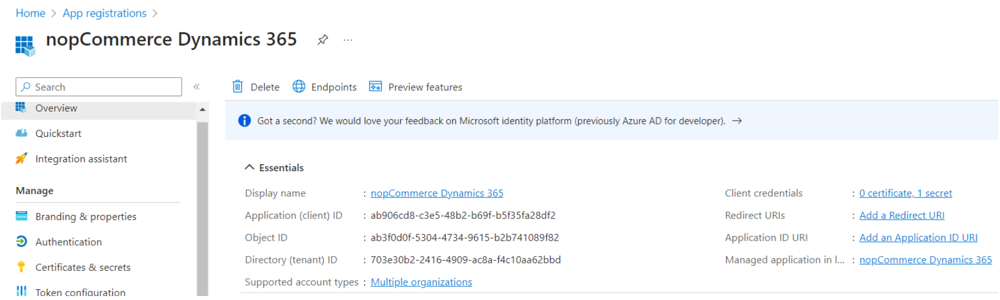
設定應用程式
在 Overview 頁面的 Essentials 下，選取 Add a Redirect URI 連結。先選取 Add a platform，輸入 URI 值，然後選取 Configure 來設定重新導向 URI。請使用
http://localhost作為 URI 值。在您剛建立的應用程式 Overview 頁面上，將游標懸停在 Application (client) ID 值上，然後選取複製到剪貼簿圖示以複製 ID 值。請將此值記錄下來，稍後您需要指定此值。
新增憑證。憑證允許您的應用程式以自身身份進行驗證，執行時期無需使用者互動。

- 在 Microsoft Entra 管理中心，於 App registrations 中選取您的應用程式。
- 選取 Certificates & secrets > Client secrets > New client secret。
- 為您的用戶端密鑰新增說明。
- 選取密鑰的到期日或指定自訂存留期。
- 用戶端密鑰的存留期限制為兩年（24 個月）或更短。您無法指定超過 24 個月的自訂存留期。
- Microsoft 建議您設定少於 12 個月的到期值。
- 選取 Add。
Note
請記錄密鑰的值，以便在您的用戶端應用程式程式碼中使用。 此密鑰值在您離開此頁面後將不會再顯示。
接著切換至 Manage > Manifest，我們可以在此看到許多屬性。我們在此處關注的是 allowPublicClient。將 allowPublicClient 設為 true 並 儲存。
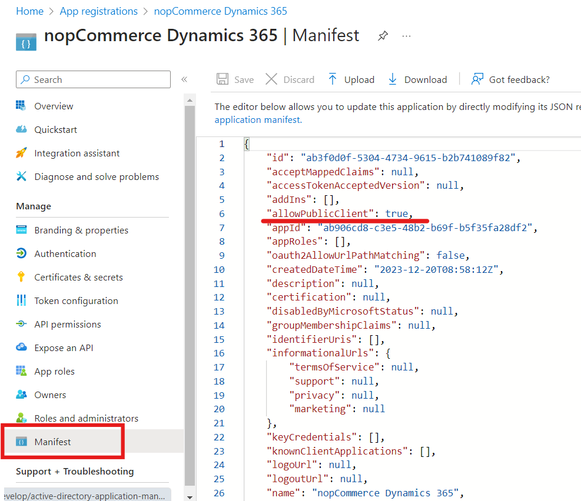
最後，在 Manage > API permissions > Add permission 中搜尋 Dynamics CRM，選取 user_impersonation 並將其新增。
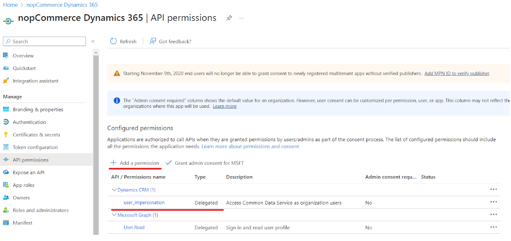
此外，請為您的組織授予管理員同意，因為若沒有管理員同意，連線可能會產生錯誤。

建立新的應用程式使用者
請遵循下列步驟來建立應用程式使用者，並將其繫結至您的應用程式註冊。
使用與您應用程式註冊相同租戶的帳號登入 Power Platform 管理中心。
在左側導覽窗格中選擇 環境 (Environments)，然後在清單中選擇目標環境以顯示環境資訊。
選擇頁面右側的 S2S 連結。

選擇 新增應用程式使用者 (New app user)。
在「建立新的應用程式使用者」側邊欄中，選擇 + 新增應用程式 (+ Add app)。
在搜尋欄位中開始輸入您的應用程式註冊名稱，然後在結果清單中選取（勾選）該應用程式。接著，選擇 新增 (Add)。
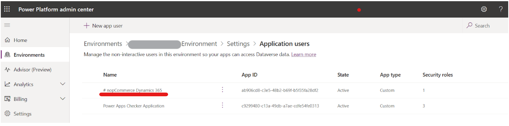
回到 建立新的應用程式使用者 (Create a new app user) 側邊欄，從下拉式選單中選擇目標 業務單位 (Business unit)，並為該應用程式使用者（也稱為服務主體）新增安全性角色。
選擇 儲存 (Save)，然後選擇 建立 (Create)。您應該會在顯示的應用程式使用者清單中看到您新建立的應用程式使用者。
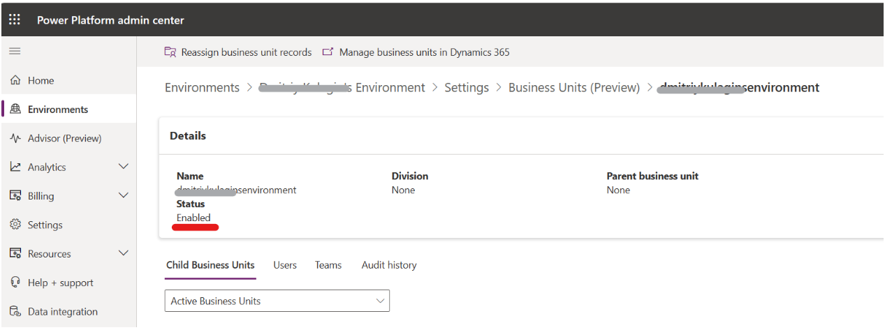
最後，會彈出一則通知，確認 Power Apps 已成功與我們的用戶端應用程式連結。

Dynamics 365 Sales 與 Business Central 整合設定
nopCommerce 的 Microsoft Dynamics 365 外掛支援與兩大 Dynamics 365 應用程式同步：Business Central 與 Sales。 Dynamics 365 Business Central 是一套完整的 ERP 解決方案，用於管理財務、營運及庫存。Dynamics 365 Sales 則是一套 CRM 解決方案，提供銷售流程自動化、顧客行為洞察及銷售績效追蹤等功能。
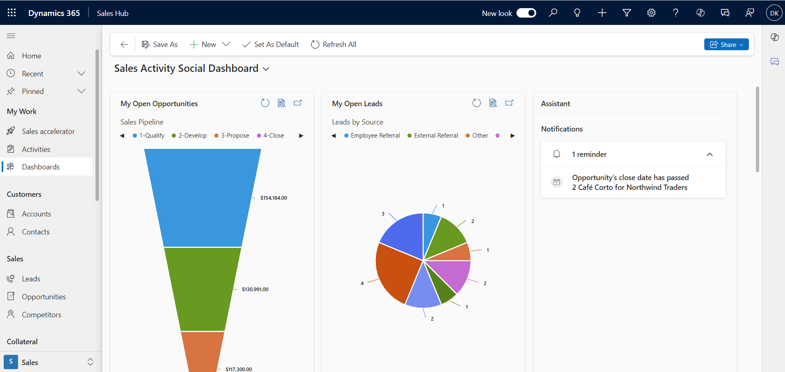
將 Microsoft Dataverse 與 Dynamics 365 Business Central 進行連結
與 Business Central 的整合是透過 Dataverse 進行，此整合提供了許多預設的設定與資料表。
在 Business Central 中選擇 設定 -> 進階設定。
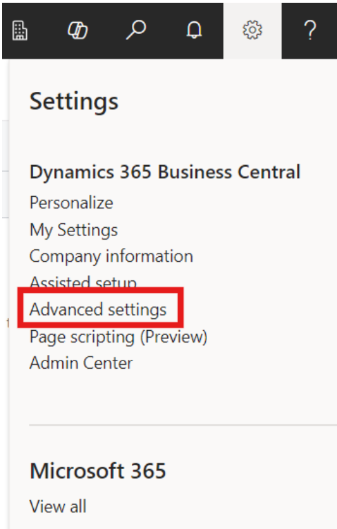
Note
在 Business Central 中選擇 設定 -> 輔助設定。 您也可以找到「與其他系統連線」的設定群組，以進一步了解整合選項。
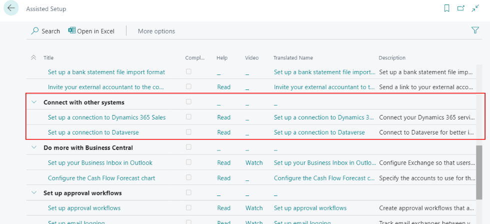
與 Business Central 的整合是透過 Dataverse 進行，此整合提供了許多預設的設定與資料表。 因此，您必須先設定與 Dataverse 的連線。
Warning
請勿嘗試先連線至 Dynamics 365 Sales。

選擇 下一步。

點擊「安裝 Business Central 虛擬資料表」。
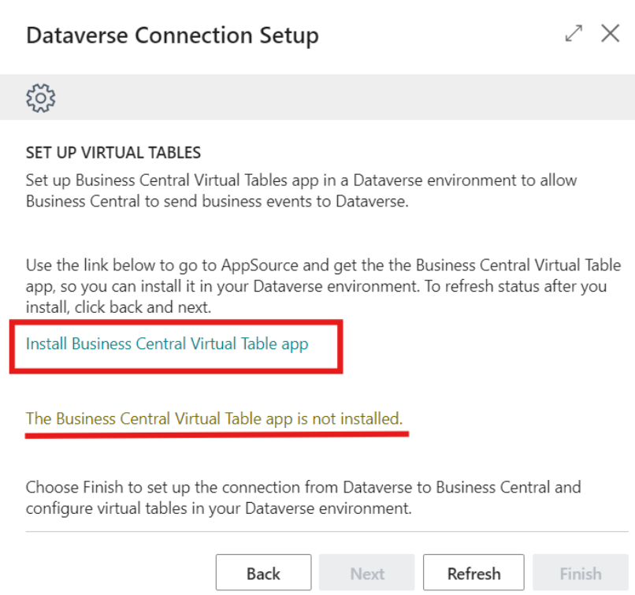
選擇您的 Dynamics 365 環境 URL，然後選擇 確定。
使用管理員使用者帳號登入，並授權給將用於連線至 Dataverse 的應用程式。
選擇 以管理員使用者身分登入。
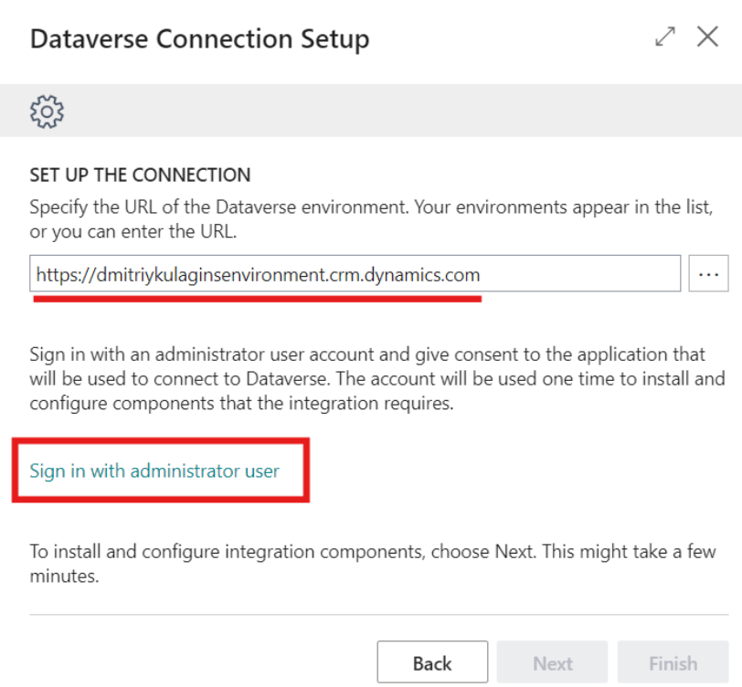
您可以在 Power Platform 管理中心 檢查此連結。
在 以管理員使用者身分登入 變為綠色且呈現粗體後，選擇 下一步。
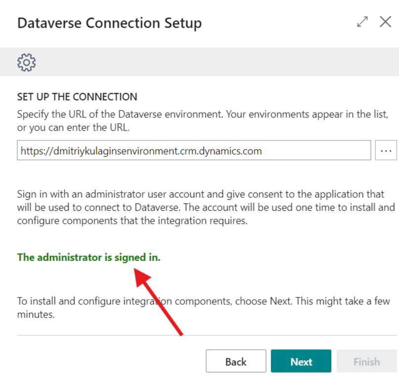
選擇一個擁有權模型。建議選擇 團隊。
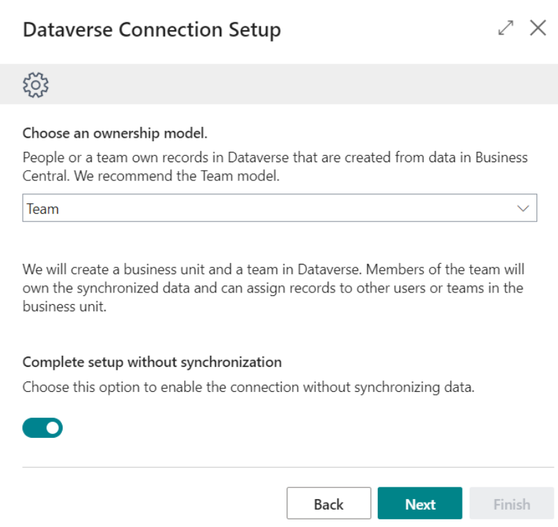
選擇 完成 以結束設定。
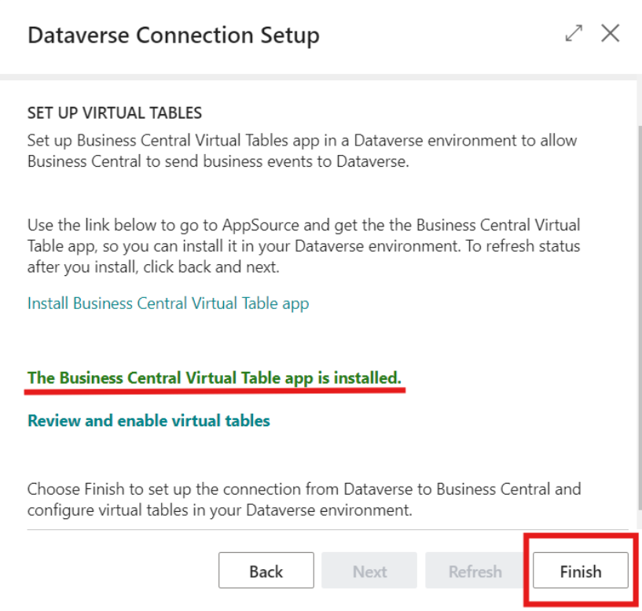
您可以嘗試測試與 Dataverse 的連線。前往 Dataverse 連線設定 頁面來檢查您的設定。

現在您可以在 Business Central 中開啟 Dataverse 頁面。
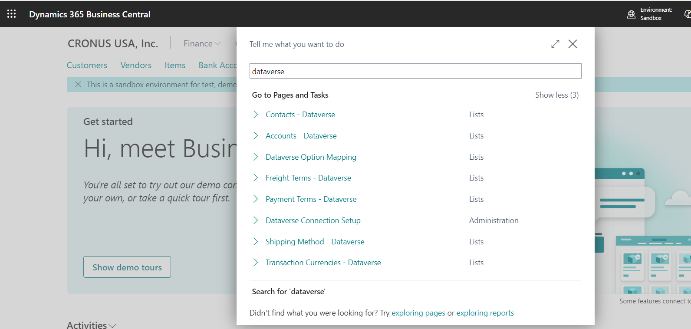
連接到 Dynamics 365 Sales
一旦 Dataverse 整合設定完成，您就可以開始與 Dynamics 365 Sales 的整合。
在 Assisted Setup（輔助設定）頁面上，選擇 Set up a connection to Dynamics 365 Sales（設定與 Dynamics 365 Sales 的連線）。

所有的整合設定步驟與 Dataverse 的整合類似。您需要指定與上次相同的環境。
結果，如果一切順利且沒有錯誤，您將會看到這兩個連線都已設定完成並正確運作。


現在，您可以在 Business Central 中開啟 Dynamics 365 Sales 頁面。
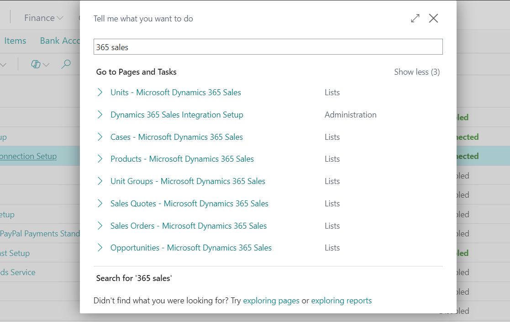
例如，Products – Microsoft Dynamics 365 Sales：
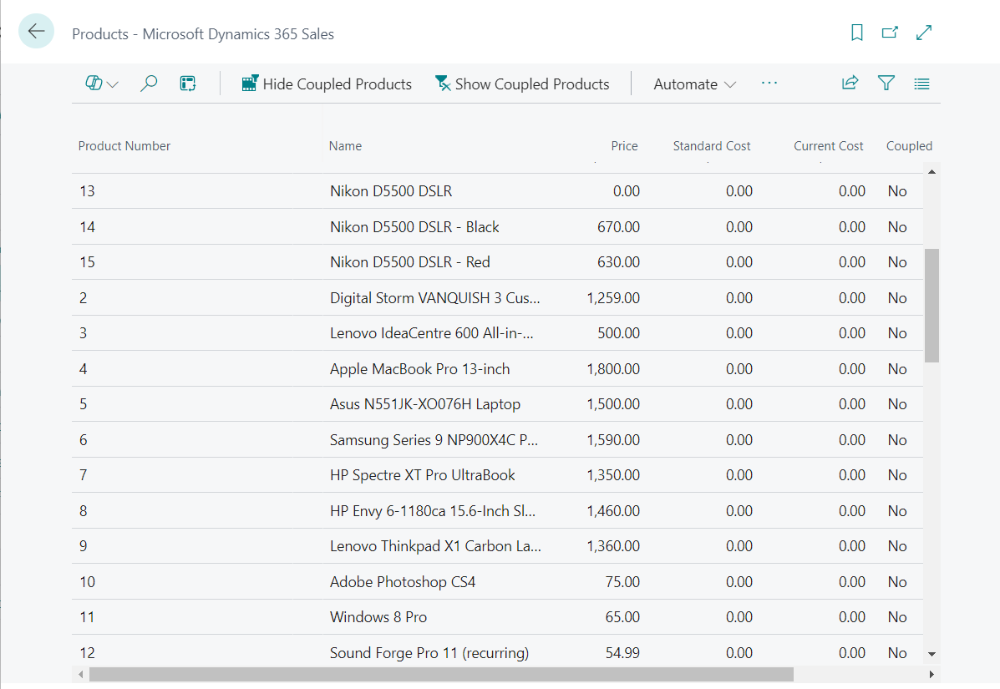
例如，Sales Order – Microsoft Dynamics 365 Sales：
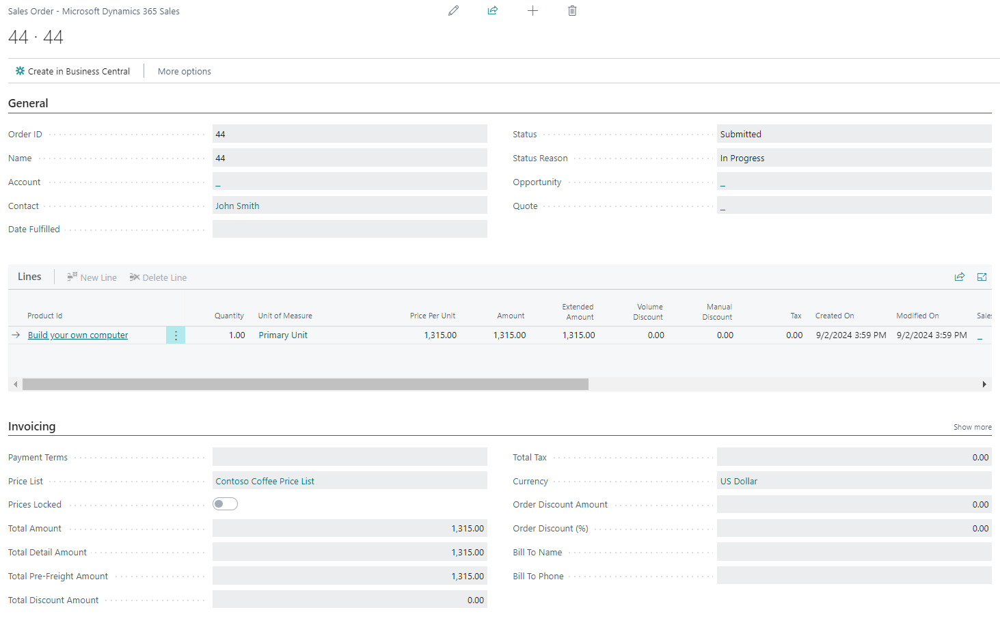
Note
為確保整合程序正確運作，請確認「All Solutions」頁面上的設定中包含以下行：

工作佇列項目（Job Queue Entries）將會自動建立：
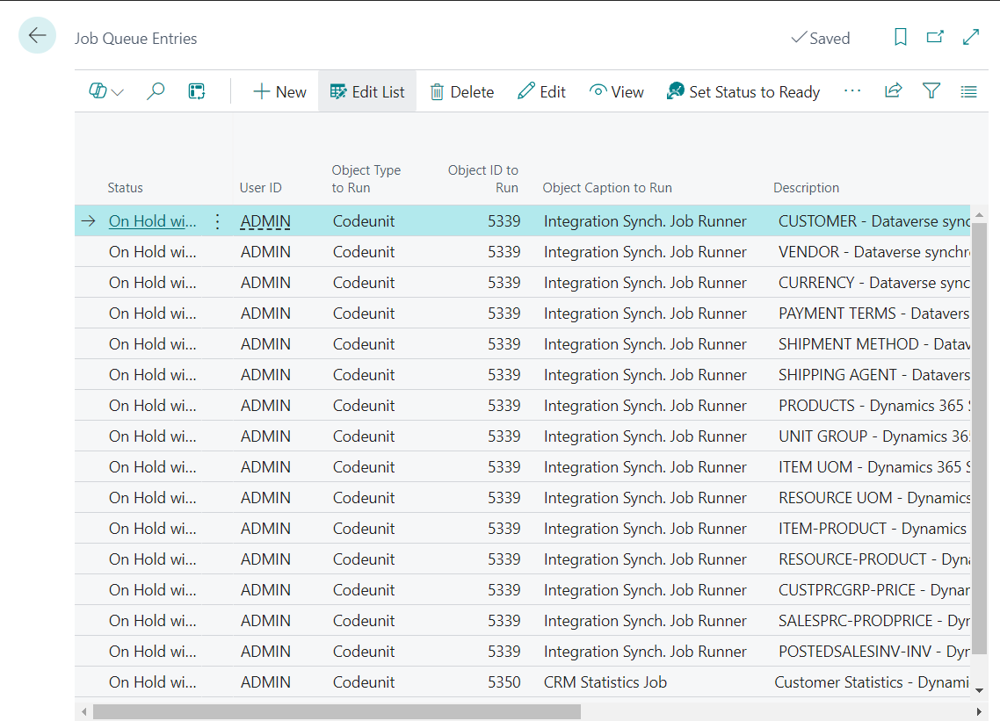
貨幣
請確保 Business Central 與 Dataverse 中的貨幣一致，以避免同步錯誤。請前往下列設定進行確認。

Dynamics 365 Sales 中組織的基準貨幣只能在建立組織時進行設定。
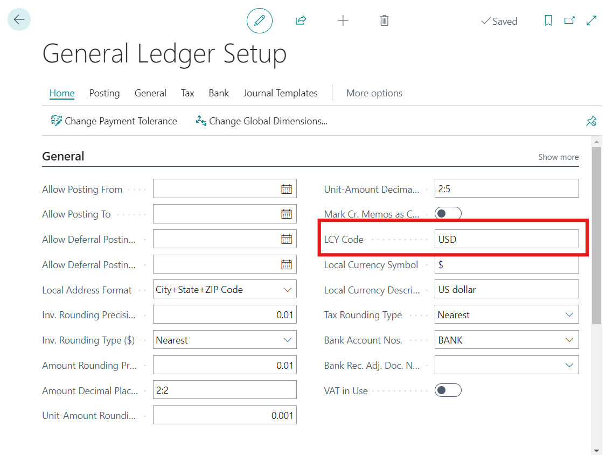
外掛安裝
本節說明如何將 Dynamics 365 服務整合到您的商店中。
- 購買此整合 here。
- 下載外掛壓縮檔。
- 前往 管理後台 > 設定 > 本機外掛。
- 使用「上傳外掛或佈景主題」按鈕上傳外掛壓縮檔。
- 向下捲動外掛清單，找到剛上傳的外掛。
- 點擊 安裝 按鈕來安裝外掛。
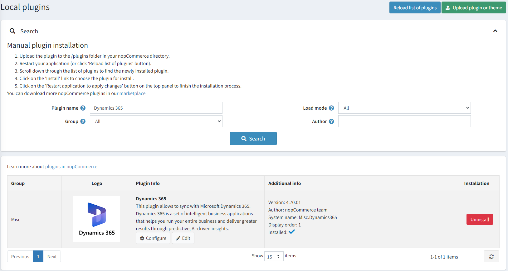
如何設定此外掛
點擊 Configure 按鈕。您將會看到 Configure - Dynamics 365 視窗：

若要在 nopCommerce 中使用 Dynamics 365，您首先需要依照前述說明在 MS Dynamics 365 註冊並設定您的帳號，並在外掛設定表單的欄位中輸入所有必要的設定：
- Application (client) ID。在 Azure 入口網站上註冊的用戶端 ID。
- Directory (tenant) ID。在 Azure 入口網站上註冊的租戶 ID。
- Client secret。應用程式 ID 的用戶端密鑰。這是應用程式在請求權杖時，用來證明其身分的一串密鑰字串。
- Environment URL。要連接的 Dataverse 執行個體直接 URL。
- Currency code。顯示您商店的主要貨幣代碼。
Note
如果您變更商店的主要貨幣，外掛設定將會在您儲存後才會更新。
- Image sync enabled。決定是否預設同步所選商品的圖片。
- Check Dynamics product exists enabled。當啟用此設定時，在同步訂單時，系統會檢查 Dataverse 中是否已存在訂單內商品的相關紀錄。注意：這會大幅增加流量並對效能產生負面影響。
- Enable auto synchronization。決定是否啟用自動同步。若停用，則必須在此頁面手動啟動同步。
- Auto synchronization period。設定自動同步的週期（以分鐘為單位）。
點擊 Save 按鈕。
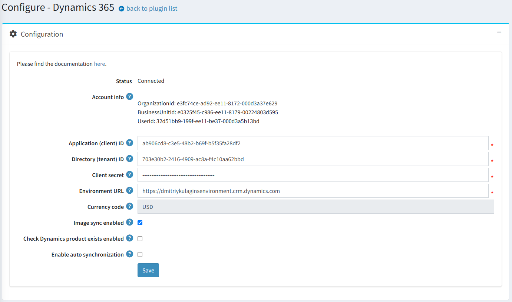
前往 Synchronization 面板，將您的 nopCommerce 顧客、商品以及訂單與您的 Dynamics 365 環境進行同步。

聯絡人同步
此外掛實作了所有現有聯絡人（顧客）的初始匯入。此動作會在使用者剛安裝此外掛並希望將所有現有的商店聯絡人匯入 Dynamics 365 時執行。後續新增與編輯顧客的動作，則會根據對應的事件自動執行。
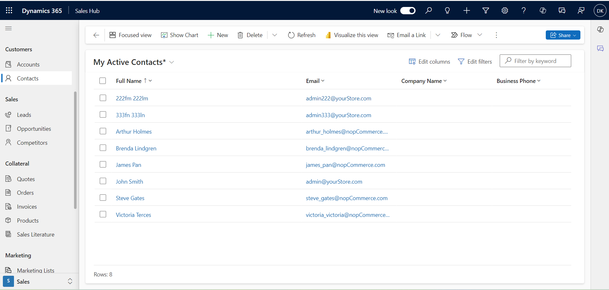
商品同步
此外掛實作了商品的匯入功能。目前支援兩種商品類型的同步：
- 單一商品
- 群組商品
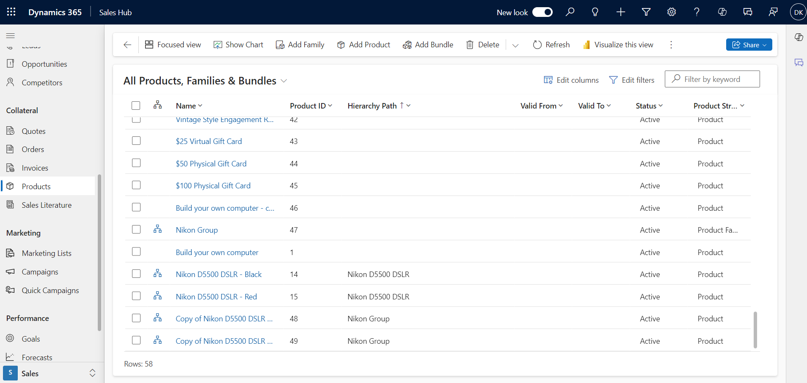
此外掛會追蹤多個事件以通知 Dynamics 365 服務：
- 建立商品。
- 變更商品（例如增加庫存量、新增圖片等）。
訂單同步
在外掛中追蹤多個事件以通知 Dynamics 365 服務：
- 下訂單。
- 訂單付款。
- 取消訂單。
- 完成訂單處理。
- 變更訂單狀態。
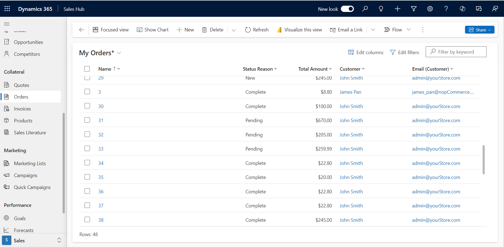
將訂單狀態變更以同步至 Dynamics 365 的情境
下圖顯示了 nopCommerce 系統與 Dynamics 365 之間的訂單狀態變更關係。

Note
刪除「已付款」狀態的訂單設有限制；這類已付款的訂單無法從 Dynamics 365 系統中刪除。